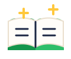
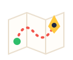

01 / PAIS

Uma visão geral
Para acompanhar
sem decidir pelo filho.
Programa dos Pais. Conheça as quatro etapas e o que cada uma propõe. Dez horas, no seu ritmo.
Orientação profissional
Um percurso para pais e filhos entenderem possibilidades, organizarem informações e planejarem os próximos passos.

Vamos descobrir caminhos?Companheiros de exploração
Rumo guia o MAPA. Bino, Pipa e Téo acompanham as perguntas do laboratório.
O percurso
Cada uma ajuda a olhar a escolha de um jeito.
Por onde você quer começar?

Uma visão geral
Programa dos Pais. Conheça as quatro etapas e o que cada uma propõe. Dez horas, no seu ritmo.

Um passo de cada vez
Programa do Filho. As mesmas quatro etapas, com mais passos. Os programas são independentes desde o início.
Laboratório · demonstração experimental
Explore atividades, compare caminhos e monte uma experiência pequena para aprender mais. Você pode usar um exemplo fictício.
Como funciona a prévia
O conteúdo da metodologia será incluído pela Anaí. Aqui, você pode conhecer a estrutura.
Pais têm a visão geral. Filhos percorrem as mesmas etapas com mais detalhe.
Veja a estrutura de aula e teste o campo de escrita. Ainda não há exercício metodológico.
Ela fica somente neste navegador. Um dia parado não apaga seus registros.
Exercícios de exploração e desenvolvimento cognitivo. Não é atendimento psicológico.
A entrada gratuita prevista é uma aula ao vivo e um trecho do ebook, ainda indisponíveis aqui. O conteúdo das etapas e subtarefas será fornecido pela Anaí.
A autorização de um responsável para o menor, independentemente de comprar o programa dos pais, ainda aguarda confirmação da Anaí.
A rota pode ser conhecida antes de entrar. Esta prévia guarda tudo somente no navegador.
000° 090° 180° 270°Meu espaço
No seu ritmo
Passaporte de exploração
Os selos reconhecem seus registros. As condições aparecem em cada um.
Seu MAPA de possibilidades
Pais · visão geral das quatro etapas.
Laboratório experimental · sete paradas
Perguntas originais de demonstração, separadas da metodologia da Anaí. Escolher uma parada não soma rumo; o exercício inteiro guardado vale um. O rascunho fica nesta aba e o registro, neste navegador. Nada é enviado.
As sete paradas acenderam. O registro fica neste navegador e não é enviado.
Perguntas de demonstração. Nada é enviado.Demonstração.
Deslize o mapa para ver as quatro etapas →
Rumo aparece em Analisar como exemplo. O desenho não indica etapas concluídas.
Mesa da Anaí · prévia local
A aula fica neste navegador e entra na rota do programa que você marcar.
No seu ritmo. Você pode voltar à rota quando quiser.
Um registro, mais clareza
Seu texto fica neste navegador. Ele não é enviado para a Anaí.
Exploração de carreira · demonstração
Um exercício para transformar curiosidades em perguntas e em um próximo passo que você possa testar.
Use informações fictícias para testar. Este exercício é uma criação experimental inspirada em referências de exploração de carreira. Não integra a metodologia da Anaí, não avalia aptidão e não recomenda profissões.
Atividades de interesse, reflexão sobre valores, comparação de possibilidades e experiências para buscar informação. As perguntas são originais e não compõem um instrumento validado.